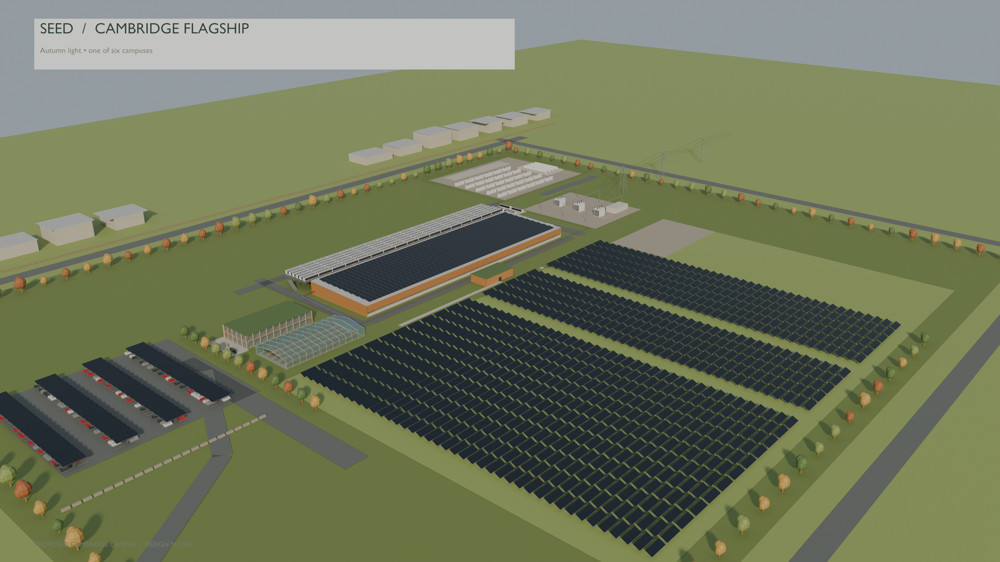
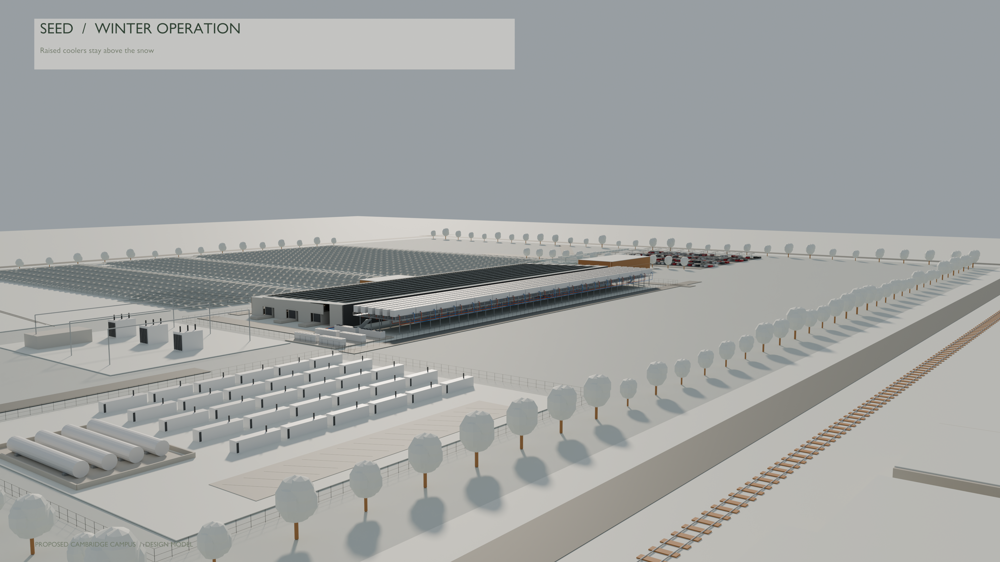
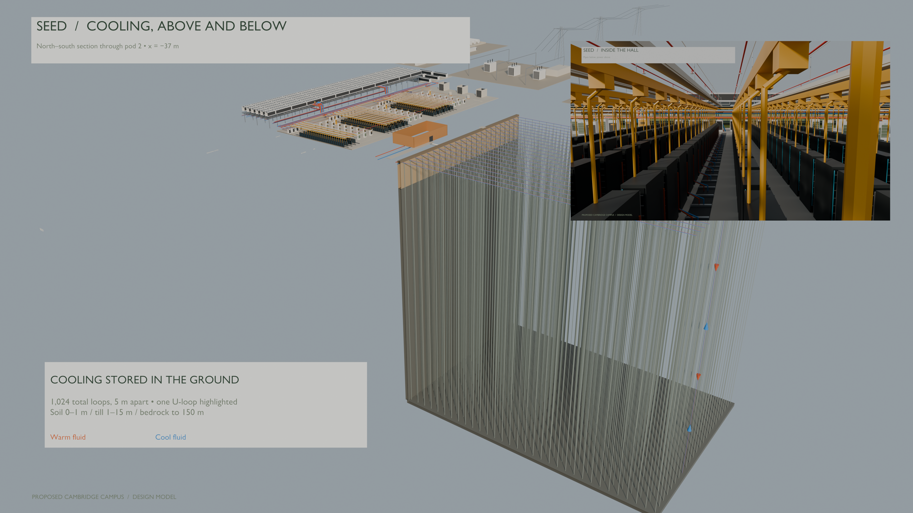
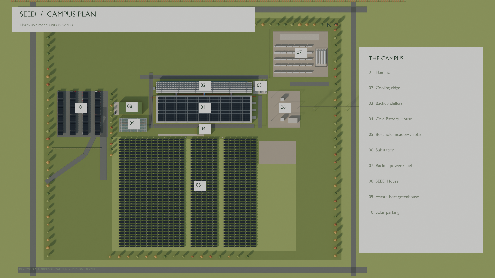
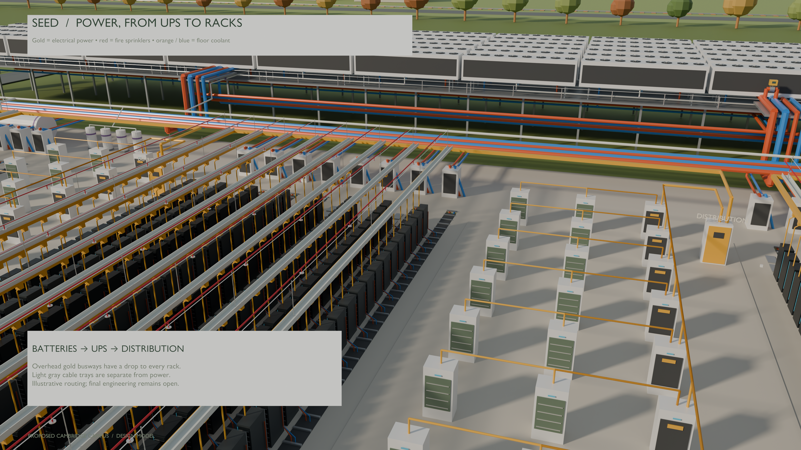
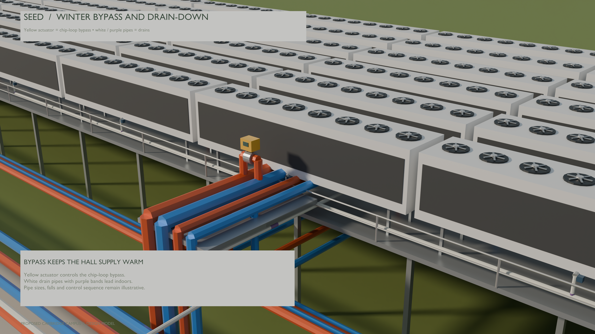
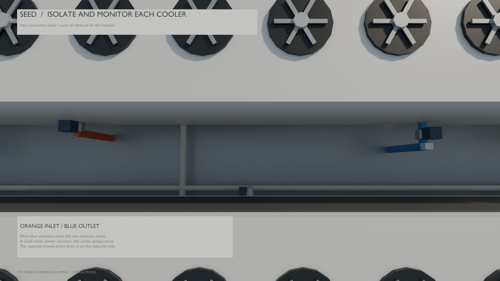
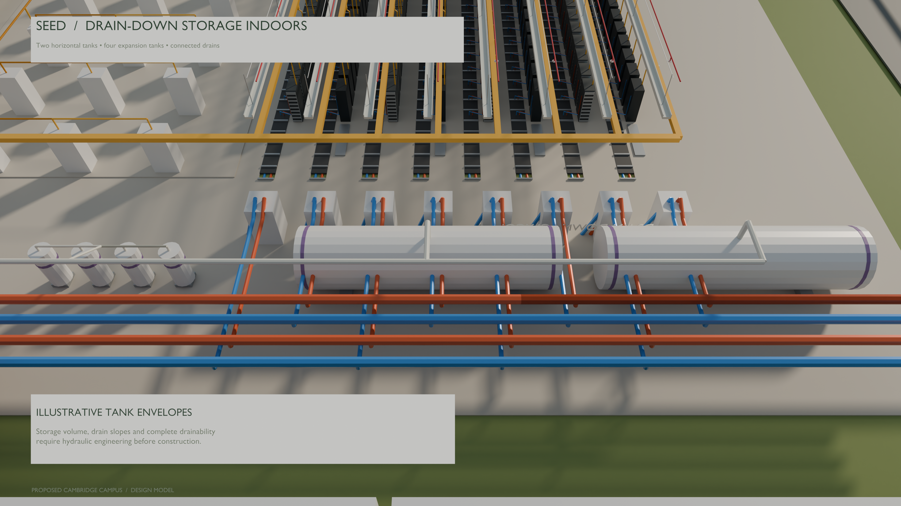
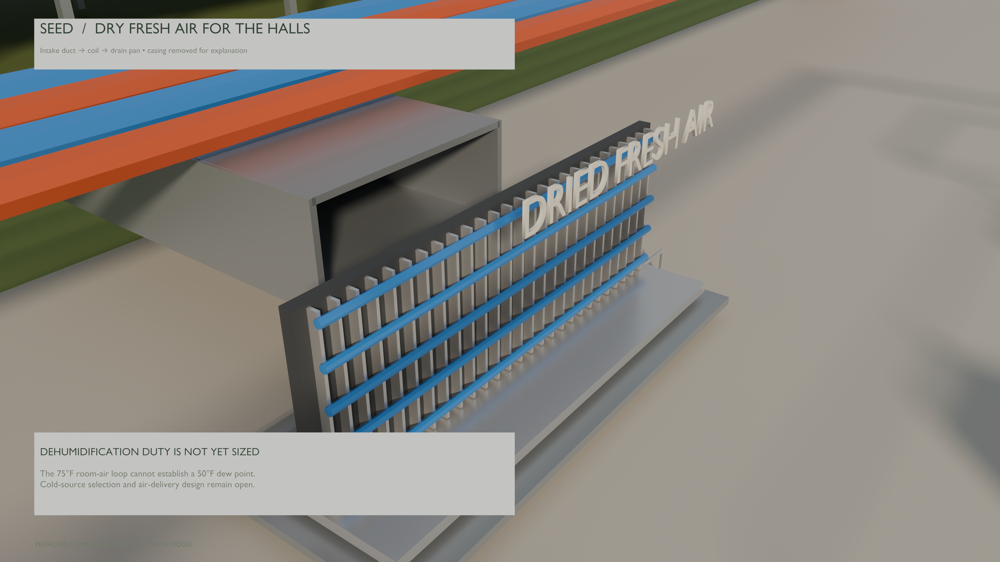

Campus, power and winter-protection views from one Blender model.



Open the full hall-detail rendering ↗






Proposed design; the Cambridge parcel is illustrative. These are Blender renders of the same model used by the interactive tour.